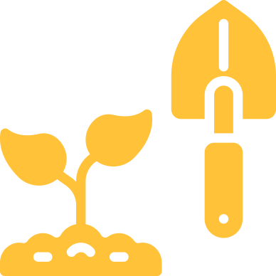
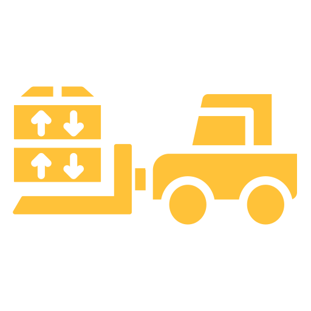

Kiwifruit Orchard Development
While anyone could most likely plant kiwifruit stock, nurturing young plants to maturity takes care and expertise. That’s what we offer!
Get in TouchOur Commitment
Bains Horticulture possesses not only the knowledge but also the experience and commitment to ensure that every new kiwifruit orchard is the best it can be. From initial land selection through the final harvest of that first crop — and beyond — our staff and our methods are dedicated to your success. We offer the finest end-to-end development solutions available in New Zealand.
Orchard Development & Management
It All Starts With The Land
We are adept at locating land well-suited for a kiwifruit orchard, primarily in the Te Puke area of the Bay of Plenty.
01
Land
Planning & Design
We use GPS It, a modern high-tech solution that utilises drone and aerial imagery to design and map the planned orchard.
02
Development
Construction
Our construction team handles all facets of actual construction, relying on our more than two decades of experience in the field.
03
Construction
Right Planting Stock
With a nursery stock that includes G3 on Bruno, M33 on Bruno and Bruno rootstock, we have the right stock to assure that a new orchard will thrive.
04
Nursery
Management Capability
Our orchard care includes Male Pruning, Blank shoots, Crush Tipping, Zero Leaf, Fruit Thinning, Bud Thinning, Leader Work, String and Pole Work, Trunk Griddling, PSA Work and Necessary Spraying.
05
Management

Harvesting
We assume full responsibility for services during the harvesting season, including a selection of fruit pickers and transport of the product to pack houses.
06
Harvesting
Innovation & Controls
Known as a local leader in the business of kiwifruit orchard management, we are proud of the innovative techniques that we employ to ensure success for affiliated growers.
Climate Analysis
In addition to the highly technical land selection techniques we use, we have raised the bar for kiwifruit farming by engaging in in-depth climate analysis and the use of advanced fertilizers during the growing season.
Irrigation System
At Bains, we employ the Ricardo system for effective irrigation water management. We take our responsibility seriously and attempt to identify every opportunity to optimise water use and enhance food security under all conditions.
What Makes Us Different
We Meet Deadlines
We understand the importance of scheduling and assure that we deliver on our promises.
Innovative
Technology
Our success is built not only on past experience but also on our readiness to adopt new technology and innovative methods that get the business of farming better.
Experienced &
Committed
Bains staff has the knowledge, training and expertise, as well as the incentive and commitment necessary for success.
Our
Promise
Fruit from a kiwifruit orchard will be ready to harvest by the 21st month following development. That’s a Bains Group’s promise.